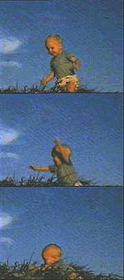

|
 |
Travis
was born at Darwin Base Hospital on the Northern tip of
Australia. Some years after, the certificate of his birth, along with most of the city, was destroyed by a cyclone. This lack of documentation later became useful for Travis when he found it necessary to lie about his age and nationality. It also left him with an abiding fondness for natural disasters. |